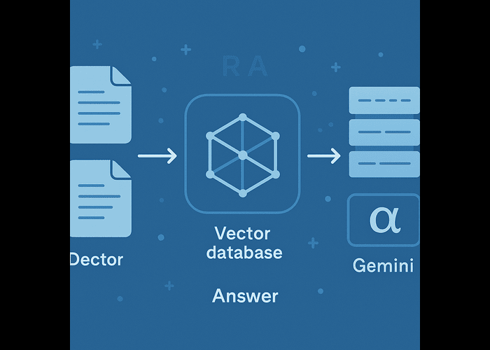
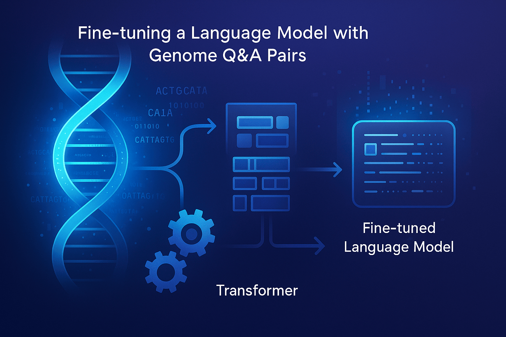
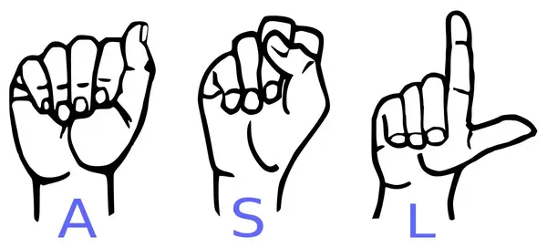
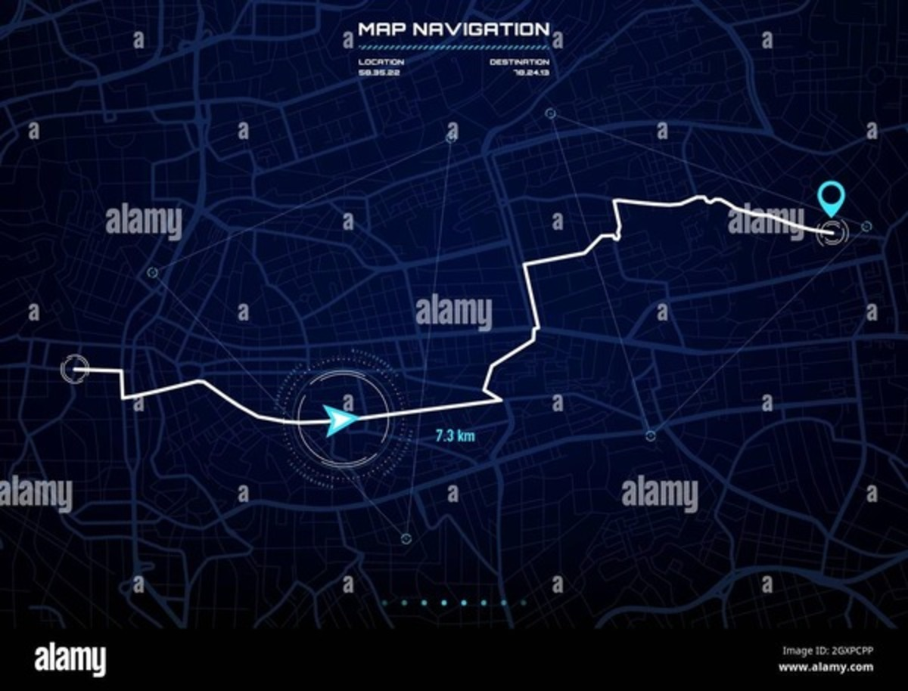

I am Love Fadia,
a Machine Learning Engineer
based in Canada.
About
I'm a Machine Learning Engineer with a passion for tackling big, complex challenges across Computational Fluid Dynamics (CFD), Computational Biology, and Electrical Engineering. With published work in these areas, I specialize in building neural networks that go beyond the basics—think convolutional, recurrent, graph neural networks, transformers, and even physics-informed networks. I love diving into data of all shapes and sizes to create models that bring science and engineering to life. Whether it's optimizing airflow, decoding biology, or pushing tech boundaries, I'm all about driving innovation with a creative, data-driven approach.
Download CVExpertise
- Machine Learning
- Deep Learning
- High-Performance Computing
- Generative AI
- Image Processing
- Natural Language Processing
- Data Processing & Feature Engineering
Experience
SOTAES Inc.
Machine Learning Engineer
May 2025 - Present
- Conducted advanced research on solving the Poisson equation with Physics-Informed Neural Networks (PINNs), exploring mesh sizes, domains, and boundary conditions to create algorithms that surpass traditional numerical methods in accuracy.
- Designed and implemented novel hybrid CFD-PINN algorithms for modelling complicated laminar and turbulent flows by solving Navier-Stokes equations, optimizing performance under varying physical parameters for superior precision.
- Leveraged high-performance computing (HPC) and large-scale datasets to validate state-of-the-art meshless computational frameworks for complex partial differential equations, driving improvements in scalability and robustness.
- Automated comparative benchmarking against conventional Computational Fluid Dynamics (CFD) solvers, demonstrating consistent reductions in simulation time while maintaining high solution fidelity.
- Documented findings and presented results to stakeholders, illustrating how meshless PINN approaches elevate accuracy, efficiency, and stability in next-generation CFD workflows.
SOTAES Inc.
Machine Learning Intern
January 2024 - April 2025
- Developed and optimized meshless PINN architectures for Burgers’, Heat, and Convection–Diffusion PDEs, tuning domain discretizations and boundary-condition schemes to outperform traditional numerical solvers in stability and accuracy.
- Conducted a focused auxiliary study on the Poisson PDE with meshless PINNs to validate overall solution fidelity and benchmark computational gains.
- Engineered bespoke PINN frameworks for Chebyshev and Bessel ODEs, refining network designs and training strategies to secure significant improvements in computational efficiency and solution precision over standard methods.
- Applied Python and Deep Learning best practices to streamline code, accelerate experimentation, and expand PINN viability across diverse PDE and ODE scenarios.
MLME Research Lab at University of Windsor
Research Assistant
August 2023 - Present
- Designed an Agentic Retrieval-Augmented Generation (RAG) framework that dynamically routes queries to specialized vector databases and deploys via Jenkins CI/CD on Google Cloud Platform for scalable, document-agnostic retrieval.
- Engineered a genomics-specific RAG pipeline using Docling parsing, custom chunking, ChromaDB vector indexing, PEFT-LoRA fine-tuning, and RESTful Flask APIs for real-time genomic question answering.
- Developed a COVID-19 variant classification model using a combination of signal processing techniques and machine learning, as well as an alternative approach utilizing image processing with deep learning, enabling accurate variant identification from genomic data.
- Built a Hepatitis variant classification model by integrating ARIMA time-series analysis with signal filtering and machine learning, as well as transformers and advanced signal processing techniques to enhance classification accuracy. This work was accepted in ACM conference proceedings.
- Designed a Dengue virus variant classification model leveraging Graph Neural Networks (GNNs) and transformers to capture complex relationships within viral genome data, contributing to more precise variant detection. This research was accepted in IEEE conference proceedings.
Hops Healthcare
Machine Learning Engineer
September 2022 - March 2023
- Developed a classification system with machine learning models and statistical methods to effectively differentiate between artifacts and clear ECG signals.
- Achieved a remarkable 90% reduction in false positives in disease classification, significantly enhancing diagnostic accuracy and patient care.
- Managed and processed an extensive dataset comprising 10 billion rows of data, overseeing the data maintenance for over 25 diseases using automated scripts.
- Demonstrated strong organizational skills and attention to detail in ensuring the integrity and accessibility of confidential and sensitive medical data.
Institute for Plasma Research
Deep Learning Intern
September 2022 - March 2023
- Spearheaded a collaborative project to manage and analyze a vast collection of CSV files, focusing on efficient data extraction, visualization, and pre-processing workflows using Python, which streamlined data handling across the team.
- Designed and implemented robust data cleaning and transformation pipelines, ensuring data consistency and quality across thousands of CSV files, significantly enhancing the accuracy and reliability of downstream analyses.
- Led the development of multiple Artificial Neural Networks (ANNs) to predict disruption events, leveraging deep learning frameworks and optimizing model performance through extensive parameter tuning and architecture refinement.
- Integrated advanced Long Short-Term Memory (LSTM) architectures to capture temporal dependencies in disruption event data, improving predictive accuracy and enabling proactive decision-making based on real-time insights.
Education
University of Windsor
Master of Applied Science in Electrical Engineering
January 2024 - April 2025
Image Processing, Computational Intelligence, Connected Autonomoues Vehicles, Energy Conversion and Management in Electrical Vehicles.
Gujarat Technological University
Electronics and Communication Engineering
July 2018 - May 2022
Python Programming, Introduction to AI, Introduction to ML, Digital Signal Processing, Wireless Communications, Digital Image and Video Processing, Embedded Systems.
Publications
A selection of my research contributions across various fields. Click to learn more about each publication.
-
 Computational Biology & Bio-informaticsMultifaceted Computational Framework for COVID-19 Variant Classification Using Advanced Machine Learning, Signal Processing, and High-Dimensional Feature Reduction Techniques
Computational Biology & Bio-informaticsMultifaceted Computational Framework for COVID-19 Variant Classification Using Advanced Machine Learning, Signal Processing, and High-Dimensional Feature Reduction Techniques -
 Computational Biology & Bio-informaticsDynamically Weighted Pairwise Cross-Attention Driven Feature Fusion in Hybrid Convolutional Neural Networks for Classification of COVID 19Variants
Computational Biology & Bio-informaticsDynamically Weighted Pairwise Cross-Attention Driven Feature Fusion in Hybrid Convolutional Neural Networks for Classification of COVID 19Variants -
 Computational Biology & Bio-informaticsRefined Classification of Hepatitis Variants Through Signal Filtering and Machine Learning
Computational Biology & Bio-informaticsRefined Classification of Hepatitis Variants Through Signal Filtering and Machine Learning -
 Computational Biology & Bio-informaticsGenomic Transformers: Innovative Approaches to Hepatitis Virus Subtyping
Computational Biology & Bio-informaticsGenomic Transformers: Innovative Approaches to Hepatitis Virus Subtyping -
 Computational Biology & Bio-informaticsAn Efficient Method For Classification of different types Of Hepatitis Virus using Genomic Signal Processing and Machine Learning
Computational Biology & Bio-informaticsAn Efficient Method For Classification of different types Of Hepatitis Virus using Genomic Signal Processing and Machine Learning -
 Computational Biology & Bio-informaticsDENG-Transformer: A Transformer Based Approach for Classification of Different Subtypes of Dengue Virus
Computational Biology & Bio-informaticsDENG-Transformer: A Transformer Based Approach for Classification of Different Subtypes of Dengue Virus -
 Computational Biology & Bio-informaticsGraph Attention Network and Graph Convolutional Network for Classification of Dengue Virus Variants
Computational Biology & Bio-informaticsGraph Attention Network and Graph Convolutional Network for Classification of Dengue Virus Variants -
 Computational Biology & Bio-informaticsBioTwinNet: Dual-Stream Multilevel Feature Fusion for Classification of SARS-CoV-2 and Influenza Virus Variants via Genomic Image Processing
Computational Biology & Bio-informaticsBioTwinNet: Dual-Stream Multilevel Feature Fusion for Classification of SARS-CoV-2 and Influenza Virus Variants via Genomic Image Processing -
 Computational Biology & Bio-informaticsLightweight Vision Transformer for Efficient Influenza Virus Subtype Classification via Genomic Image Processing
Computational Biology & Bio-informaticsLightweight Vision Transformer for Efficient Influenza Virus Subtype Classification via Genomic Image Processing -
 Computational Fluid DynamicsA Physics-Informed Neural Network Solution of the 2D Poisson Equation
Computational Fluid DynamicsA Physics-Informed Neural Network Solution of the 2D Poisson Equation -
 Computational Fluid DynamicsA Convolutional Neural Network for Solving the 2D Poisson Equation on a Fine Mesh
Computational Fluid DynamicsA Convolutional Neural Network for Solving the 2D Poisson Equation on a Fine Mesh -
 Electrical EngineeringPrediction of Output Power in Combined Cycle Power Plants(CCPPs) Using Regression Models and Neural Networks
Electrical EngineeringPrediction of Output Power in Combined Cycle Power Plants(CCPPs) Using Regression Models and Neural Networks -
 AI in HealthcareBrain Tumor Classification through Transfer Learning Models
AI in HealthcareBrain Tumor Classification through Transfer Learning Models
Multifaceted Computational Framework for COVID-19 Variant Classification
Using Advanced Machine Learning, Signal Processing, and High-Dimensional
Feature Reduction Techniques
International Journal of Computer Applications
The article discusses a machine learning method for classifying COVID-19 variants by first coding DNA sequences into numeric formats, then applying signal processing techniques such as Discrete Cosine Transform and Fast Fourier Transform to extract features. Feature dimensionality is reduced using LDA and PCA, and classification is achieved using an ensemble of Decision Tree, SVC, and a combination of LGBM, AdaBoost, and Random Forest, attaining an accuracy of 99.8%.
Dynamically Weighted Pairwise Cross-Attention Driven Feature Fusion in Hybrid
Convolutional Neural Networks for Classification of COVID-19 Variants
Journal of Computer and Information Science
The article explores a deep transfer learning method for classifying Alpha, Delta, and Omicron coronavirus variants by converting their DNA sequences into two-dimensional images using techniques like Frequency Chaos Game Representation and Markov Transition Field. These images are then processed and used to train deep learning models, including an ensemble of three Convolutional Neural Networks, achieving an accuracy of 99.14%.
Refined Classification of Hepatitis Variants Through Signal Filtering and Machine Learning
Proceedings of the 8th Int’l Conf. on Computational Biology & Bioinformatics (2024)
This article presents a novel approach using Auto Regressive Moving Average (ARIMA) and signal processing techniques for classifying four types of Hepatitis virus: Hepatitis-B, C, D, and E. DNA sequences are first converted to numeric values, followed by feature extraction using discrete sine transform. Dimensionality is reduced using ARIMA with a model order (1,1,5), achieving a classification accuracy of 98%. Additionally, DNA sequences are processed with a 9-window low pass FIR filter and downsampled to preserve information, with classification performed by Light Gradient Boosting Machine and Random Forest. The comparison reveals the ARIMA-based method outperforms the filtering approach in accuracy.
Genomic Transformers: Innovative Approaches to Hepatitis Virus Subtyping
Accepted – IEEE Conference Proceedings
This article details a method using Transformer models to classify four Hepatitis virus subtypes (B, C, D, E) by segmenting DNA sequences into k-mers, converting these into vectorized representations using Word2Vec, and classifying them with Transformer models, achieving 99.49% accuracy. This approach integrates advanced Natural Language Processing techniques to enhance the understanding of genetic variations in Hepatitis viruses.
An Efficient Method for Classification of Different Types of Hepatitis Virus Using
Genomic Signal Processing and Machine Learning
Proceedings of the IEOM World Congress (2024)
This paper outlines an effective method for classifying the four primary hepatitis virus types—Hepatitis-B, C, D, and E—utilizing Genomic Signal Processing combined with Machine Learning. The process begins by converting the DNA sequences of different hepatitis strains into numeric data using various coding algorithms. Dimensionality is reduced using Singular Value Decomposition, and classification is performed using Decision Tree and Light Gradient Boosting Machine models, achieving a 99% accuracy through normalizing atomic numbers and a customized Haar Wavelet.
DENG-Transformer: A Transformer-Based Approach for Classification of Different
Subtypes of Dengue Virus
Proceedings of the 2024 8th International Conference on Computational Biology and Bioinformatics
This article introduces a Transformer Neural Network technique for classifying the four subtypes of Dengue virus, achieving 99.75% accuracy. It applies a windowing technique to segment 10,000 length DNA sequences into varied-sized chunks, then uses Word2Vec to convert these segments into vector representations. These vectors are fed into a Transformer architecture, effectively identifying patterns and classifying the virus subtypes with high precision.
Graph Attention Network and Graph Convolutional Network for Classification
of Dengue Virus Variants
3rd International Conference on Advancement in Computation and Computer Technologies
This article introduces a novel method using Graph Convolutional Networks (GCNs) and Graph Attention Networks (GATs) for classifying the four Dengue virus serotypes (DENV-1, DENV-2, DENV-3, DENV-4). By constructing a graph with k-mers and k-nearest neighbors and applying the GAT model, this approach achieves a classification accuracy of 99.75%, surpassing previous methods. This technique is crucial for vaccine development, public health strategies, and enhancing treatment for Dengue, which poses significant health threats in warm regions.
BioTwinNet: Dual-Stream Multilevel Feature Fusion for Classification of
SARS-CoV-2 and Influenza Virus Variants via Genomic Image Processing
3rd International Conference on Advancement in Computation and Computer Technologies
This study presents BioTwinNet, a unique dual-stream deep learning framework that integrates multilevel feature fusion with genomic image processing. Using methods like Wavelet Analysis, Discrete Cosine Transform, and Power Spectral Density, DNA sequences were converted into visual representations. BioTwinNet, which makes use of the depth capabilities of ResNet architectures and the hierarchical feature extraction of Convolutional Neural Networks, was used to evaluate these genomic images. This method achieves an impressive classification accuracy of 97.42%
Lightweight Vision Transformer for Efficient Influenza Virus Subtype Classification
via Genomic Image Processing
Under Review – IEEE Conference Proceedings
This article presents an innovative approach to classify influenza virus subtypes A, B, C, and D. Accurate classification is crucial for public health since these variants show varying degrees of severity and transmission. Our suggested approach uses methods like the Grammian Angular Summation Field and Grammian Angular Difference Field and their modified versions to convert DNA sequences into visual patterns. These patterns are subsequently processed using low-parameter models like MobileNetV2 and Vision Transformers to identify subtypes accurately. This approach obtains a classification accuracy of 98.34% and is less labor-intensive and efficient than existing methods.
A Physics-Informed Neural Network Solution of the 2D Poisson Equation
Under Review – AIP Conference Proceedings
This paper presents the application of Physics-Informed Neural Networks (PINNs) to solve the Poisson equation across various mesh sizes. By incorporating physical laws into the training process, the PINN demonstrates increasing accuracy with finer mesh resolutions, validated by decreasing MAE and MSE metrics. The results showcase the effectiveness of PINNs in solving differential equations with high precision and stability, and their advantage over the finite difference method in runtime efficiency.
A Convolutional Neural Network for Solving the 2D Poisson Equation on a Fine Mesh
Under Review – AIP Conference Proceedings
This paper presents a Convolutional Neural Network approach to efficiently solve the Poisson equation in Computational Fluid Dynamics. Trained on coarse mesh data, the model quickly produces accurate results for finer meshes, reducing computational time while preserving solution accuracy for complex flow analyses.
Prediction of Output Power in Combined Cycle Power Plants (CCPPs) Using
Regression Models and Neural Networks
Accepted – Springer Conference Proceedings
This paper evaluates advanced machine learning models for forecasting electrical power output in Combined Cycle Power Plants using a dataset with ambient temperature, humidity, vacuum, and pressure. It compares traditional regression models (Decision Tree, Multiple Linear, Random Forest) against deep learning models (ANN, CNN). The ANN model achieved superior results with an RMSE of 2.83 and R-squared value of 97.24%, showcasing the effectiveness of deep learning models in capturing complex patterns for optimizing energy production.
Brain Tumor Detection Using Transfer Learning Models
Accepted – IEEE Conference Proceedings
This study explores two deep learning-based methodologies for brain tumor identification: the YOLO (You Only Look Once) algorithm. Specifically, the YOLOv7 framework, the seventh iteration of YOLO, was employed. Both methodologies leverage deep learning techniques and are fundamentally built on convolutional neural network architectures. The research utilized a publicly available Kaggle dataset comprising 3,064 T1-weighted contrast-enhanced MRI images from 233 patients. The YOLOv7 model achieved an accuracy of 90%, while the YOLOv5 model achieved an accuracy of ?%. Performance metrics were rigorously computed, and the results are presented graphically to facilitate detailed analysis.
Recent Works
Here are some of my favorite projects I have done lately. Feel free to check them out.
-
RAGAgentic RAG - Multi-Domian Aware Retrieval-Augmented Generation System
-
RAGGenomic RAG – Metadata-Driven Multimodal RAG for Genomic
-
LLM Fine-TuningGenomic QA Fine-Tuned Qwen-3
-
 Web ApplicationMovie Recommendation System
Web ApplicationMovie Recommendation System -
 Data AnalysisCustomer Clustering for Targeted Advertisements
Data AnalysisCustomer Clustering for Targeted Advertisements -
Deep LearningTweet Emotion Recognition.
-
Deep LearningMalaria Cell Infection Classification with CNN
Agentic RAG - Multi-Domian Aware Retrieval-Augmented Generation System
Project linkA Flask-based, multi-domain RAG system that routes user queries to specialized vector stores and composes answers with an agent layer on top of Gemini, building on the original RAG_System foundation.
- RAG
- Python
- Flask
Genomic RAG – Metadata-Driven Multimodal RAG for Genomics
Project linkA multimodal RAG pipeline optimized for genomic-classification PDFs. Supports text, table and image queries via multi-vector retrieval and rich metadata filtering for lightning-fast answers.
- RAG
- Flask
- Vector DB
Genomic QA Fine-Tuned Qwen-3/h5> Project link
A parameter-efficient workflow to fine-tune a causal LLM on a 5 000-pair genomic Q&A dataset. Includes JSON⇢instruction conversion, mixed-precision training and model export.
- LLM
- Fine-Tuning
- Python

Movie Recommender System
Project linkA content-based recommender system using Python, Streamlit, and the NLTK library. By analyzing textual data, the system provided personalized recommendations by matching user preferences with relevant content. NLTK was utilized to process and extract keywords, calculate text similarity, and rank recommendations, while Streamlit served as the interactive frontend, enabling a user-friendly experience
- Recommendation
- Python

Customer Clustering for Targeted Advertisements
Project linkCustomer segmentation on credit card data using K-means clustering and visualized insights with t-SNE and other plots. Analyzed clusters to identify key spending patterns, demographics, and preferences, enabling a data-driven approach for more effective, targeted advertising strategies.
- Data Analysis
- K-means Clustering
Tweet Emotion Recognition
Project linkText classification model to categorize text data into multiple classes, enabling efficient sorting and analysis of large text datasets. The project focuses on accurately interpreting and classifying textual content, supporting applications in sentiment analysis, topic categorization, and content filtering. By building a scalable solution, this project facilitates better text understanding.
- Deep Learning
- Natural Language Processing
Malaria Cell Infection Classification with CNN
Project linkThis project focuses on detecting malaria by classifying cell images as infected or uninfected using a Convolutional Neural Network (CNN). The model analyzes microscopic cell images to identify infections accurately, aiding in rapid and automated malaria diagnosis. This solution provides a scalable approach to assist healthcare professionals in early detection and treatment, especially in resource-limited settings
- Deep Learning
- Convolutional Neural Network